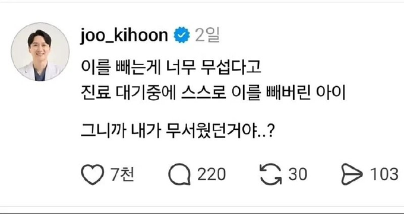
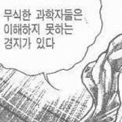
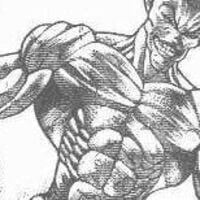
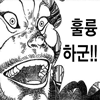
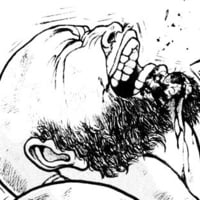
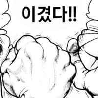

최후의치과천충은나스스로치과의가되는것이다
최후의발치는 내가 곧 발치를하는것이다


소리가 개무섭긴해
이를 뽑는다는 공포보다 본인이 통제할 수 없는 상황에 놓이다는 공포가 더 크면 저렇게 된다더라
이만 뽑으면 이 무력한 상황에서 벗어날 수 있으니 그냥 뽑아버린거지
그러니까 애가 벌써 그걸 깨달았다는거에요..?
고통의 순간보다 그걸 기다리는게 더 힘들다는걸 어린나이에 깨달아버린거지
난뽑택
근데 나도 초등학생때 이 내가 뽑았었는데
거의 빠질것 처럼 덜렁덜렁 거리는게 재밌다고 혀로 툭툭 건들다가 손가락으로 밀고 땡기다가 걍 때버림


